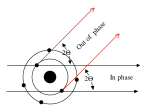
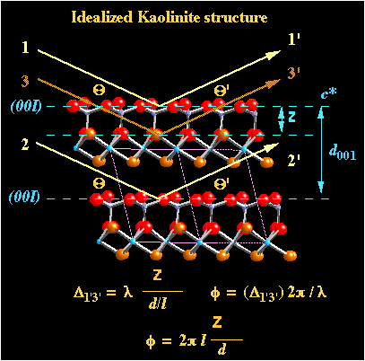
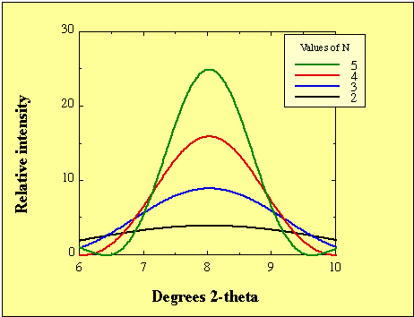
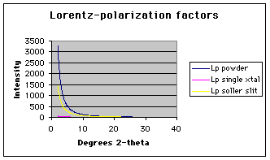

Required reading:
Moore and Reynolds, Pages 77-103
Brindley and Brown, pages 128-135, 225-261
Schroeder. P.A. pages 53-66
Theoretical treatment of X-ray Diffraction
It is possible to calculate the diffraction pattern (i.e.,
coherent interference pattern) for any given crystal structure
given:
Scattering effects
Atoms scatter radiation (with a wavelength equal to that of
incident radiation) in all directions (like a beacon). The
efficiency (f) is the result of scattering from
individual electrons. The nucleus of the atom, although charged
has an extremely large mass and can not be made to oscillate due
to incoming radiation. Intensity of coherent scattering is
inversely related to the square of the mass of the scattering
particle. Coherent scattering is primarily attributed to the
electrons. An atom having Z electrons will have a scattering
proportional to Z times the amplitude of a single electron.
f = Amplitude of a wave scattered by atom / Amplitude of wave scattered by an electron
Scattering efficiency is also controlled by direction of
scattering. The figure below shows the phase shift that
results from scattering from two different regions of the electron
cloud. In the forward direction there is no phase shift. As the
angle increases, so does the phase shift.

As a consequence, f decreases
with
increasing
angle of reflection. The figure below shows the change in f for commonly encountered
ions in clay minerals. The atomic scattering factor values are
plotted as a function of °2θ. The plot below is for Cu Kα
radiation. Click here
for an Excel spreadsheet that allows you to change the wavelength
of radiation (data from Cullity, 1978). In fact, the patterns
below look similar to the pattern you would get for a monatomic
gas of that particular element. Ask yourself, what would the
Earth's atmosphere look like for a particular wavelength of
radiation?
Recall that rows of atoms cause scatter in specific directions
resulting in constructive interference (i.e., coherent scatter).
For the case of clay minerals, the approach is greatly
simplified. The morphological nature of clay minerals is such that
they can easily be prepared to orient their crystallographic axes
(the ab plane) relative to the X-ray beam. This is called
"preferred orientation" (as opposed to random orientation).
We now want to describe this diffraction effect from a unit cell
in a crystal. If clays are oriented, then we can consider
this to be a one-dimensional diffraction problem.
The scattering from a unit cell (F) is always less than
the total sum of atoms in the unit cell because the rays that the
atoms scatter are out of phase with each other. F
is call the structure factor and is therefore, a measure
of the intensity of the diffracted X-ray beam.
To find F, the sum of the amplitudes of each atom in the
unit cell must be determined.
The sum of amplitudes must be adjusted by the amount of phase
difference due to the location of the atoms in the unit cell.
Recall that the phase difference is related to (1) the wavelength,
(2) the angle of incidence, (3) the position of the atom planes
and (4) the number and type of atoms in each plane. An example is
given the figure below.

Δ1'2' = λ = 2d001 sinθ ( e.g., λ = 1.54049Å Copper K-alpha radiation : kaolinite d001 = 7.167Å 12.40° = 2θ)The path length difference between rays 1' and 3' is less than the path length difference between rays 1' and 2'. By proportion it we see the path length difference between rays 1' and 3' is scaled by fractional distance of the plane relative to the ray 2' plane. This path length difference is expressed as:
Δ1'3' = λ * z /d001 (e.g., given z = 2.35Å, then Δ1'3' = 1.54059 * 2.35 / 7.167 = 0.505Å )
where z is the distance from the top plane of atoms (the origin) reflecting ray 1 to the plane reflecting ray 3.
Recall that (u, v, w) are the fractional coordinates for any position within a 3-D unit cell. d001 is related to the c lattice parameter by the angle of the c-axis (β), where d001 = c sin(β). (e.g., c = 7.37Å and β = 104.5° and d001 = 7.167Å)
z /d001 = w (e.g., z = 2.35Å / 7.167Å = 0.3279)
where: w is the fractional coordinate.
The path length difference then becomes:
Δ1'3' = λ * w (e.g., 1.54059 * 0.3275 = 0.505Å )
φ = 2 π Δ / λFor any order of indice,
The phase shift for rays 1 and 2, where Δ1'2' = λ creates the condition for maximum constructive interference
φ1'2' = 2 π Δ1'2' / λ = 2 π (e.g., 2 π * 1.54059 / 1.54059 = 2 π )
The phase shift for rays 1 and 3, where Δ1'3' = λ * z creates the condition for partial destructive interference.
φ1'3' = 2 π Δ1'3' / λ = 2 π z l / c (e.g., 2 π * 0.505 / 1.54059 = 0.655 π )
φ = 2 π l w
Recall that (u, v, w)
are the fractional coordinates for any position within a 3-D unit
cell.
For the 3-D case of (hkl)
Phase differences between the scattered waves (all with the same
wavelength) can be determined mathematically by a structure factor
function where:
where:
We use the identity:
to yield
If there is a center of symmetry in the unit cell and the origin
for the calculation can be placed at that point then the sine
series goes to zero and the complex number is eliminated. This
elimination is not essential to the theoretical development of the
structure factor. It's just being eliminated here to help
streamline the example and simplify the calculations.
Therefore the above equation becomes,
We can expand the phase of the wave (φn) by
letting
where:
let:
The fact that F can be negative or positive is not
detectable in the X-ray experiment. The only thing that we measure
with a detector is the intensity or magnitude. Therefore, squaring
F eliminates its sign. What the detectors sees then is |F|2
.
F is a discontinuous function (i.e., it is defined
by the integer l).
In order to consider the structure factor over a range of angular
space (i.e., make it a continuous function) we return to
Bragg's Law.
let:
solve in terms of l
by substitution:
Where:
Under ideal conditions all the diffraction takes place at the
Bragg angles of reflection.
Diffraction effects (in one dimension) due to scattering from a grating can be described by an interference function:
where:
If N = 1 then Φ = 1 at all angles. Bragg reflection cannot occur from a single scattering center.
If N = 100, then Φ (at the ideal Bragg angle) is large. At the same time Φ is small away from the Bragg angle. In other words the peaks are very intense and narrow.
The example below are graphical solutions to the interference function using values of 8° 2θ, λ = 1.54049 Å and values of N from 2 to 5.

Lorentz-Polarization factors (Lp)
Polarization factor (p)
- The X-ray beam that exits the tube is unpolarized
(analogous to light coming from the sun). Low angle
scattering causes polarization of the beam (analogous to light
reflecting off a lake). The polarization factor accounts for
increase scattering at low angles. Various workers have conducted
experiments and fit their results to theory and found the
scattering intensity (Ip)
due to polarization is proportional to (1 + cos2
θ)/2. This is taken from theoretical study and is known as the
Thomson equation for scattering of an X-ray beam from a single
electron.
Lorentz factor (L) - The X-ray beam that exits the tube is also not strictly monochromatic nor parallel (some divergence occurs). These factors in combination with motion of the crystal (as noted by Klug and Alexander) contribute to a planes "opportunity" to reflect (i.e, planes that make an angle with the rotation axis are in a reflecting position longer than those parallel to the axis, hence disproportionate intensities will be observed). The Lorentz factor is related to the volume of sample irradiated as a function of angle.
The number of crystals exposed to the beam is also a factor.
Therefore we need to consider scattered beams from random powders
differently from single crystals. The single crystal form of
the Lorentz factor is sin 2θ. The random powder form of the
Lorentz factor is (sin θ sin 2θ). We will see later, that from a
practical standpoint it is almost impossible to achieve a
perfectly oriented sample or a complete randomly oriented sample.
The approach will be to use some mixture or blending of the single
crystal form and the powder ring distribution factor (ψ). Lp = (1 + cos2
θ) ψ / (sin θ). For random powders ψ is proportional to 1/(sin θ).
For a single crystal ψ is constant. Here is a spreadsheet to
graph the functions. The development of this theory is given by Reynolds (1986).

If you really want to know a lot more about Lp factors, then seek the reference below.
The complete kinematic XRD equation
I(2θ) = Lp |G|2 Φ
Effect of scattering domain size and defects
A characteristic of clay minerals is such that the size of their
coherent scattering domains is typically small and there are
imperfections or stacking defects between adjacent domains (i.e. N
is small).
The result of numerous stacking faults or small domain sizes is
known as particle size broadening and can be inferred from the
peak widths (as seen in the interference function above).
X-ray diffraction peak widths are commonly measured by their Full
Widths at Maximum Half-height (FWMH).
Under certain conditions the FWMH can be used to estimate the
distribution of "particle sizes" (this really means their domain
sizes, not physical particle diameters).
This is expressed by the popular Scherrer
Equation which assumes all reflections along a line normal
to the reflecting plane. The equation also ignores strain
broadening, which is due to variation in lattice parameters.
where:
Example: Case of (101)
reflection for the quartz structure.
let:
then:
L = (1.54059 x 1 ) / [(0.1 x 3.14 / 180) x cos (13.3°)] = 1300Å
(130 nm)
With a d-spacing of 3.3446 Å for the (101) this translates to 388 coherent scattering
domains.
Click below for a very detailed set of notes produced by Robert
H. Blessing.
Part I
Part II
{kind=link}